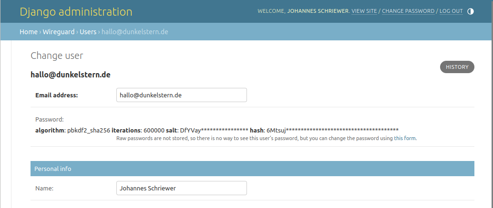
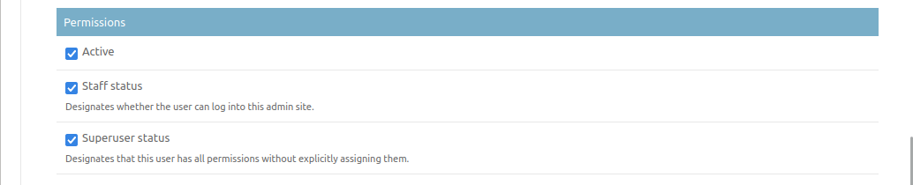
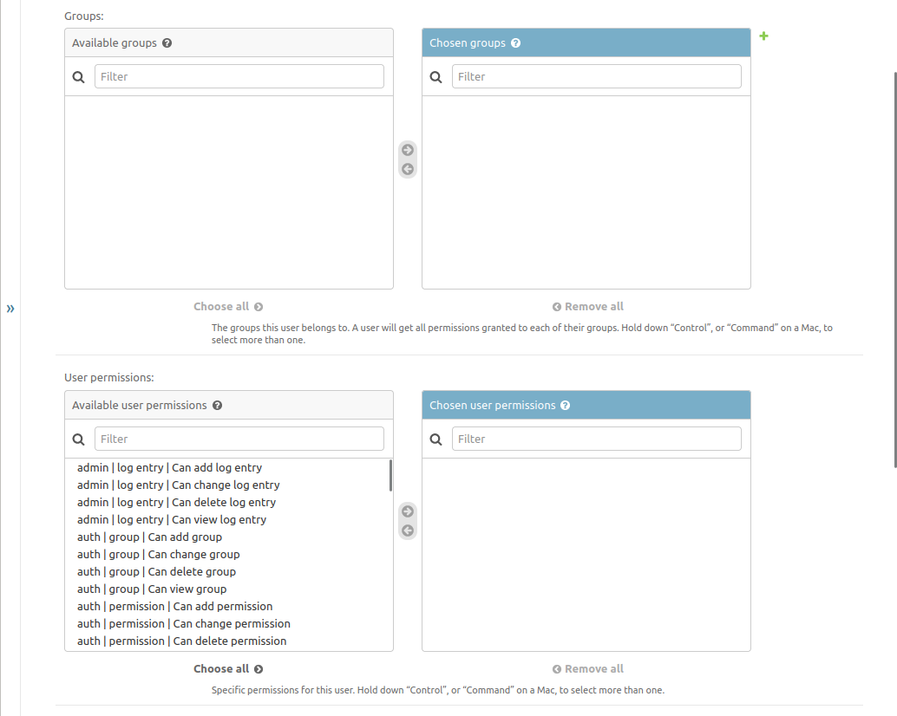
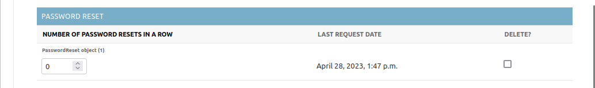
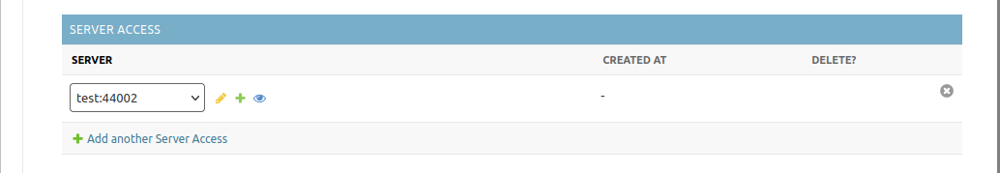
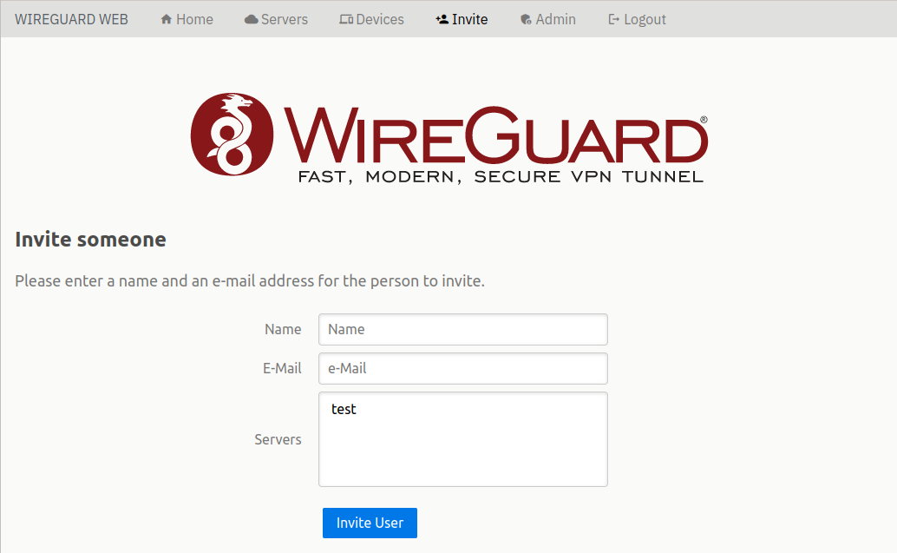

User management
Introduction
{kind=link}
User management is the default Django user management. You can create users by yourself in the Django admin, by sending them invite mails or by allowing self- registration. We have only one Name field here because I think splitting it up in first- and last-name is generally a bad idea.
Staff and Admin
{kind=link}
For basic permissions we have 3 levels:
Active, an inactive user cannot login in any way or reset their password.
Staff, these Users may access advanced functionality like bridging or access the Django admin interface, but they will need explicit permissions set for every action they may perform. Furthermore they are restricted to managing resources that belong to a server/endpoint they are member of. So for example, if you allow a staff user to change a server, they will only be allowed to change the servers they are a member of, but not others.
Superuser these users automatically have all permissions all the time
Permissons
{kind=link}
Here you may add users to specific sub-groups (there will be a Client Admin, User Admin and Server Admin groups in the future) or give fine-grained permissions to users.
Be aware, as far as a user does not have Superuser privileges they will always be restricted to resources that belong to a server they are part of.
Only servers they are part of are editable
Only clients that belong to a server they are allowed on are editable
Only users that have invites or self-register e-mail domains on a server the Staff user has access to are editable
Password resets
{kind=link}
To avoid that the password reset form is used as a way to harass users, it has been rate limited. The users may only send a password-reset e-mail every 30 seconds and only 10 times a day. If you’ll have to reset that counter you can just delete the Password Reset entry and the user will be able to request more resets immediately.
Server Invites
{kind=link}
If you want to invite a user onto a server or remove them from a server you may add or remove Server Access entries here (which will not cause an e-mail to be sent), or if they have not made an account yet use the Web UI form:
{kind=link}